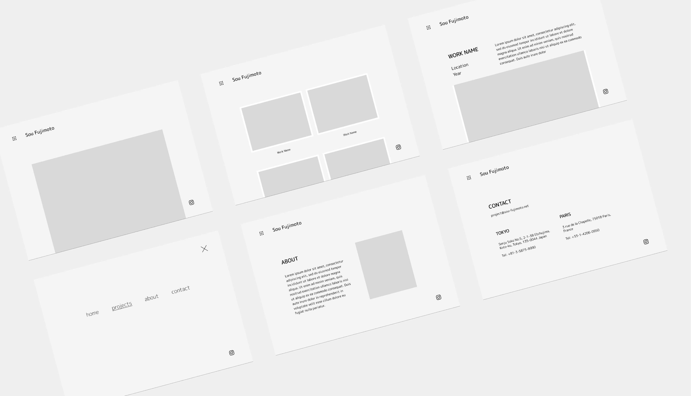
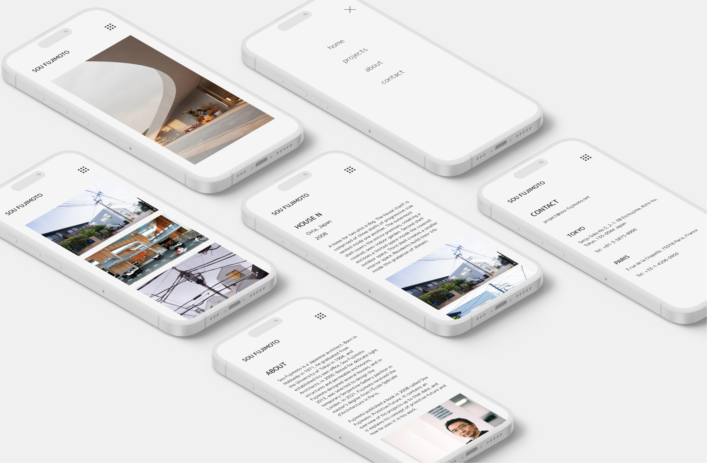
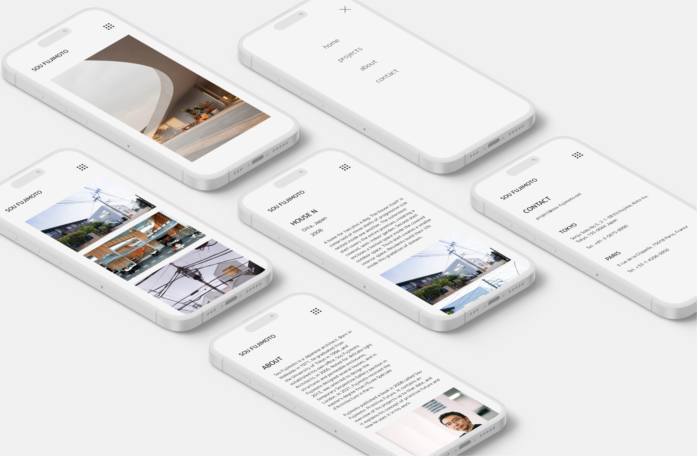
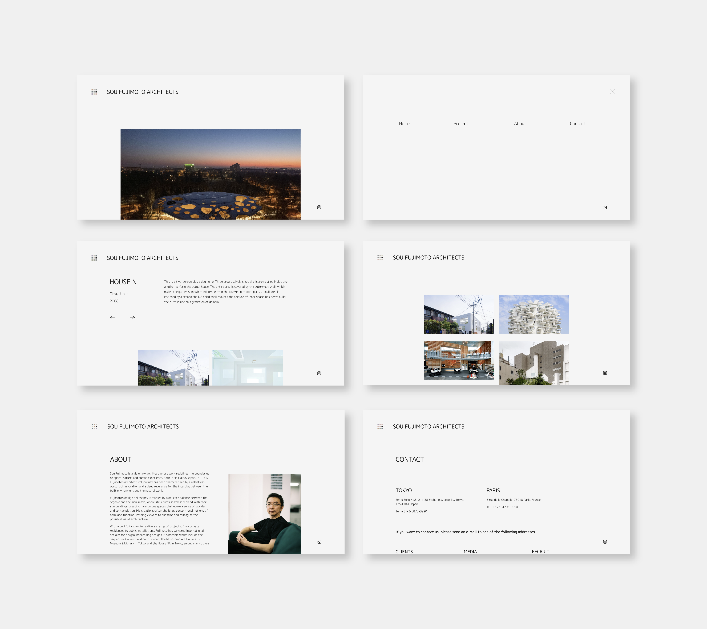

UNIVERSITY PROJECT | VISUAL DESIGN | UX DESIGN | TIMEFRAME: 28 DAYS
For this project, I created a portfolio website for an architect, focusing on translating their unique sensibilities into a compelling digital experience. The process began with in-depth research to understand the designer's field—be it Industrial, Graphics, Interactive, or Architecture. I then developed wireframes and mood boards to define the visual direction and layout of the site. The final deliverable was a fully functional website that effectively showcases the designer’s work, while ensuring a streamlined development process.
The Challenge: Balancing style with an efficient user experience
One design element I noticed in his work is the use of lightweight structures and open frameworks, which give his buildings a sense of transparency and lightness, making it very experimental. He uses lots of natural materials in his designs like wood and glass, which builds a relationship between the natural world and the constructed environment. Additionally, the ideas of transparency, layering, and modularity are commonly explored in his works. His structures frequently have complex spatial layouts, where many volumes and levels overlap and interact.

My objective was to create a simple website to make navigation as easy as possible while following the general design aesthetic of the actual artist himself. I shifted towards refining the placement of essential elements intended for consistency across all pages. I iterated on the design concepts based on feedback from users, focusing on enhancing usability, accessibility, and overall user satisfaction. Each iteration brought me closer to achieving the vision of a seamless and engaging user experience.
 

Throughout the development of this portfolio, I engaged in multiple rounds of feedback sessions, which provided invaluable insights and suggestions, including:
The final result of this project is a fully functional portfolio website that effectively embodies the designer’s unique sensibilities and showcases their work in a compelling digital format. The site is built upon thorough research into the designer’s field, ensuring that the visual direction and layout resonate with their professional identity.
View here: https://seliinakang.github.io/INTD219-Assignment3-SelinaKang/
This project was both enjoyable and challenging, pushing me to expand my web development knowledge and proficiency. It was the most rewarding of the three projects I’ve worked on so far, largely due to the freedom it offered in design and the opportunity to deepen my understanding of HTML, CSS, and JavaScript.
I actively sought input from a diverse group of people during the development process. Their feedback was crucial in distinguishing between poorly and well-designed web portfolios, helping me to refine the website's user experience and make more informed design decisions.
Designing and coding a portfolio for Sou Fujimoto was an insightful experience that allowed me to deeply understand and incorporate another designer’s unique style. Fujimoto’s approach of blending natural forms with architectural innovation helped me step out of my comfort zone and look at design from a new perspective. Adapting my own style to reflect his vision authentically taught me a lot about analyzing and incorporating different design philosophies into my work.
Looking forward, I am excited to take this experience into future projects, further exploring how different design styles can inform and inspire my work. I aim to continue pushing my creative boundaries, fostering a deeper connection between form, function, and individuality in my designs.